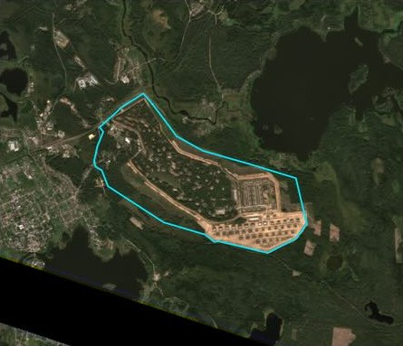
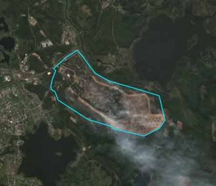
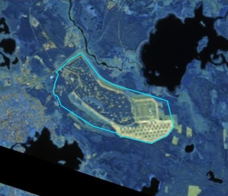
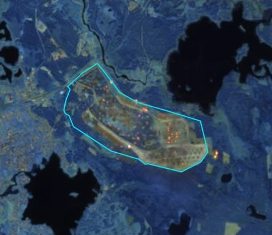

OpenStreetMap, NASA FIRMS and Sentinel-2 imagery, tested on 100 past fires, explosions and strikes.

Before

After

Before, infrared

After, infrared
Toropets arsenal, Russia. Sentinel-2, 16 Sep 2024 and 19 Sep 2024. In infrared, fire shows orange. Contains modified Copernicus Sentinel data 2024.
Summary
This study tests whether open data can confirm reported fires, explosions and strikes. The test set contains 100 past events: 74 incidents and 26 controls. A control is the same site on an ordinary day.
Three sources are combined. OpenStreetMap provides the site outline. NASA FIRMS provides satellite heat detections. Sentinel-2 provides images before and after each event.
17 of 37
incidents confirmed at the site
Incidents with a clear view only. Test half: 8 of 16. 95% CI 31%–62%.
0 of 15
false alarms on controls
A further 11 controls were under cloud and could not be tested. Upper bound: 20%.
17 vs 8
confirmed with the site outline vs with the city point
Same 48 incidents.
26 of 74
incidents with no usable site location
Only the city check applies. It confirmed 5.
Key finding. Large fires at a known site were frequently confirmed. Small or indoor fires were not (0 of 5). With only a city name, far fewer events were confirmed. Cloud prevented observation of 11 incidents. Every verdict still requires human review.
Results
Each event gets two verdicts. The site verdict uses the facility outline, a heat filter and the images. The city verdict uses only the city point a geocoder would return. Counts come with 95% Wilson intervals. Sample sizes are small, so the intervals are wide.
Verdicts by category, all events
Category
Corroborated
Ambiguous attribution
Weak
Not observable
Not corroborated
No site point
Site level, of observable (95% CI)
City level, of all
Industrial fire
5
0
0
2
1
9
5 of 644%–97%
3 of 17
Large outdoor fire
7
0
1
4
8
3
7 of 1623%–67%
7 of 23
Port or ship fire
5
0
1
1
4
4
5 of 1024%–76%
2 of 15
Small or indoor
0
0
0
4
5
10
0 of 50%–43%
1 of 19
All incidents
17
0
2
11
18
26
17 of 3731%–62%
13 of 74
Controls (ordinary days)
0
0
1
11
14
0
0 of 150%–20%
0 of 26
Test half: sites not used to tune any threshold. The verdict rules were written after some test cases had been seen (see method), so these results are semi-blind. Only 4 of the 10 test controls had a clear view.
Verdicts by category, test events
Category
Corroborated
Ambiguous attribution
Weak
Not observable
Not corroborated
No site point
Site level, of observable (95% CI)
City level, of all
Industrial fire
2
0
0
0
0
1
2 of 234%–100%
3 of 3
Large outdoor fire
4
0
0
1
4
1
4 of 822%–78%
4 of 10
Port or ship fire
2
0
1
0
1
3
2 of 415%–85%
1 of 7
Small or indoor
0
0
0
1
2
8
0 of 20%–66%
1 of 11
All incidents
8
0
1
2
7
13
8 of 1628%–72%
9 of 31
Controls (ordinary days)
0
0
0
6
4
0
0 of 40%–49%
0 of 10
Calibration half: the sites used to tune the heat filter.
Verdicts by category, calibration events
Category
Corroborated
Ambiguous attribution
Weak
Not observable
Not corroborated
No site point
Site level, of observable (95% CI)
City level, of all
Industrial fire
3
0
0
2
1
8
3 of 430%–95%
0 of 14
Large outdoor fire
3
0
1
3
4
2
3 of 814%–69%
3 of 13
Port or ship fire
3
0
0
1
3
1
3 of 619%–81%
1 of 8
Small or indoor
0
0
0
3
3
2
0 of 30%–56%
0 of 8
All incidents
9
0
1
9
11
13
9 of 2124%–63%
4 of 43
Controls (ordinary days)
0
0
1
5
10
0
0 of 110%–26%
0 of 16
Corroborated
New heat at the site inside the time window, or a blind image label of fire, smoke or damage at a site without flares.
Ambiguous attribution
The heat could belong to another known incident at the site.
Weak
An image labelled fire at a site with flares, or heat only after the window.
Not observable
Nothing found, and the site was under cloud. No clear image within 5 days.
Not corroborated
Nothing found, although the data were available.
No site point
No usable site location in the sources. Only the city check applies.
Site check vs city check
Incidents with a site point: site-level vs city-level result
City: yes
City: no
Site: corroborated
7
10
Site: anything else
1
30
Across the same 48 incidents with a known site, the site check confirmed 10 that the city check missed.
The city check said yes once where the site check did not (Kstovo). That yes came from other heat in town.
Neither check flagged a control. However, only 15 of the 26 controls had a clear view.
Every event
All 100 events, including misses. Each row opens an evidence page with the location, FIRMS detections, satellite images and sources. "Map" shows the event on the map below.
FIRMS signal only from +71 h, after another incident at the site (incident 2025-02-03); not counted; site 100% cloud in the first Sentinel-2 image after; first clear image +10 d
Site colour shows the best verdict among the site's incidents. Hollow rings mark incidents without a site point. They sit on the city named in the news, inside the 10 km search radius. Selecting a site shows its events, the FIRMS detections and one year of heat history.
Layers
Method
Six stages. Each reads the previous stage's files and writes its own. Downloads are cached, so reruns give the same result. Tags show which steps run automatically and which require manual review.
01 Events manual
100 past events: four incident types plus 26 controls. Each has a city point, the kind a geocoder returns. Where the sources allow, it also has a precise site point. Sites are split into a calibration half and a test half.
02 OpenStreetMap automaticmanual review
The script searches OSM by name near each site and proposes outlines. The correct one is selected by hand. 17 outlines were accepted. In three cases, the name search returned a neighbouring facility (Moss Landing, Crocus City Hall, Deer Park). For this reason the final choice is not left to the script.
04 FIRMS automatic
All VIIRS and MODIS heat detections in a box around each event. Five days around the event, plus a 30-day baseline. Days without satellite data are logged as gaps, so "nothing seen" is never confused with "no data".
05 Persistent heat automatic
One clean year of heat history per site, on a 400 m grid. Each detection is labelled new, anomalous or background. Only new and anomalous count as fire. Thresholds were tuned on calibration sites and frozen on 27 Oct 2026, before any test result was examined.
07 Sentinel-2automaticblind labels
Three images per site: clear before, first after, clear after. A burn index (dNBR) compares the site with a ring around it. 65 image sets were labelled blind, with names hidden and controls mixed in. 3 had been seen before labelling (E006, E021, E017); their pages note this.
06 Verdicts automatic
Fixed rules turn the evidence into one verdict. Time window: 3 h before to 36 h after when the hour is known. 12 h before to 48 h after when only the day is known. Heat that starts within 4 days after another known incident at the site does not count. The city check counts satellite passes with heat within 10 km of the city point. It compares them with that area's own 30-day baseline (Poisson, p < 0.01).
Decisions made before and after examining results
The heat thresholds were frozen before any test result was examined. The verdict rules were not. They were written after stages 04–07 had been run and part of the output inspected.
Two rules came from specific cases. The attribution rule came from Volgograd E002, in the test half. The flare caveat came from the Garyville control. One rule was changed after the first run.
The test-half results should therefore be read as semi-blind. The full disclosure is in verdict_rules.json.
FIRMS at site scale
NASA advises against using FIRMS for local-scale decisions. This study does exactly that. A VIIRS pixel is 375 m wide. A detection only says that something hot was near the site.
A detection therefore counts only if three conditions hold. It is new against the site's own history, it falls inside the time window, and no other known incident explains it better.
The controls measure how often this still goes wrong. The image is a second, independent check.
Cases
Two cases where the method works, three where it fails or would have misled, and two edge cases. The images are those shown during labelling: before, first after and clear after. True colour on top, shortwave infrared below.
512 FIRMS detections passed the heat filter within the time window. The first was recorded 0.9 h before the reported main blast. The image taken a day later shows smoke over the depot and hot spots in the infrared. It was labelled active fire. Two caveats apply. The image had been seen before labelling. One ground-truth source, Wikipedia, itself cites FIRMS.
Refineries produce heat every day. On the control date (E077), all 28 detections at the site matched the usual pattern. All were labelled background, and no false alarm was raised. On the night of the strike (E006), 14 of 15 detections were new or anomalous. The event was corroborated.
The only FIRMS signal begins 71 h after the reported strike. By then, a second attack had hit the same refinery. Counting it would confirm the first event with the fire from the second. The attribution rule excludes it. The site was under cloud, so the verdict is not observable.
In shortwave infrared, refinery flares resemble active fire. Both the incident and the ordinary-day control were labelled active fire. At sites with flares, an image labelled fire therefore counts only as weak evidence.
Kstovo refinery: a city-level yes for the wrong reason
The city check found 10 satellite passes with heat within 10 km, against about 3 expected, and returned corroborated. However, the heat was located 2–4 km from the refinery and was already present the day before. The site itself was under cloud. A positive city-level result does not establish a site-level one.
FIRMS recorded nothing, as the depot was under cloud. The first clear image was taken 14 days later. It was labelled new damage or burn scar, which counts as corroborated. The result should be treated with caution. No clear image exists from before the strike, and this image had been seen before labelling.
Proletarsk oil depot: a city-level yes with a confounder
The sources give no usable site location, so only the city check applies. It found 18 satellite passes with heat within 10 km, against 1.8 expected. The baseline covers the four preceding weeks of the same harvest season, so stubble burning is already included. The depot fire is the likely cause. The city check, however, cannot separate the two.
Small samples. 37 observable incidents. 15 observable controls, 4 of them in the test half. Cloud removed 11 controls as tests. The false-alarm rate is only bounded below 20%. More controls on clear days would tighten it.
Semi-blind test. The verdict rules were written after some test cases had been seen.
The heat filter costs hits. On calibration sites it removed every false hit on controls. It also removed true ones: controls with a site hit 2/6 -> 0/6; confirmed events 5/9 -> 2/9.
Small and indoor events are out of reach. 0 of 5 confirmed. A 375 m heat pixel and an image every few days miss short or covered fires.
Cloud is judged from one image. "Not observable" rests on one image taken around 10:30 local time. It stands in for the whole window.
Site locations. 30 of 74 site points come from Wikipedia coordinates. Only 17 sites have a reviewed outline. A wrong site point gives a wrong verdict.
Ground truth. Two events are disputed. One (Moscow, E005) rests on a single secondary source. One (Toropets) is partly circular: its source cites FIRMS.
Past events only. Live news is less reliable. First reports often give the wrong place or time.
Next steps
Hourly cloud cover at the satellite overpass times, instead of the one-image proxy.
More controls, picked on clear days.
A fresh, fully blind run on new events, with the rules unchanged.
Data, code and credits
build_site.py builds this site from the pipeline outputs. The code for every stage is in the repository. Downloads:
events.csv: all events with locations, verdicts, reasons and sources (CC BY 4.0)
fire_detections.csv: FIRMS detections in the event windows, with heat-filter labels (CC BY 4.0)
Fire detections: NASA FIRMS. We acknowledge the use of data from NASA's Fire Information for Resource Management System (FIRMS) (earthdata.nasa.gov/firms), part of NASA's Earth Science Data and Information System (ESDIS). Products: VIIRS 375 m active fire from S-NPP (doi:10.5067/VIIRS/VNP14IMG.002), NOAA-20 (doi:10.5067/VIIRS/VJ114IMG.002) and NOAA-21 (doi:10.5067/VIIRS/VJ214IMG.002). MODIS Collection 6.1 active fire (Giglio, Schroeder, Hall and Justice, MODIS C6/C6.1 Active Fire Product User's Guide, 2021). FIRMS data are provided as is. See the LANCE disclaimer.
Licences: code MIT. Data CC BY 4.0, except the OpenStreetMap outlines (ODbL 1.0).
Use of AI
This study was carried out by Kristof Krebs with the assistance of Claude Opus 5.5, a large language model made by Anthropic. Claude wrote parts of the code, including the pipeline stages and this website. It also helped compile the event list and its sources, ran parts of the analysis and drafted text.
Every output was reviewed by the author and checked against its sources. The OpenStreetMap outlines were selected and every image was labelled by the author, without event names. The verdict rules, assessments and conclusions are the author's responsibility.
Corrections are welcome as GitHub issues. Please include a source.